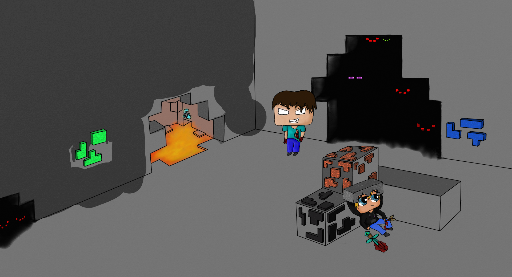
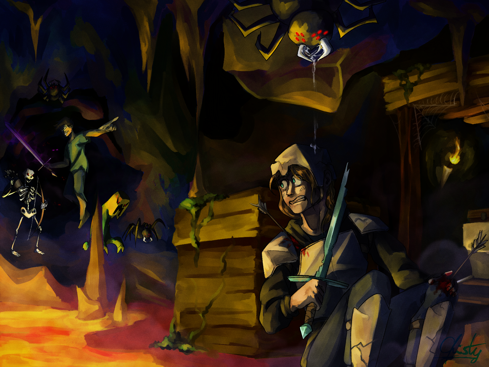

First off, no, I am not saying that so unfinished art are masterpieces. But they can be, in some way. If you are an artist, then you probably have a bunch of unfinished art lying around. And this is not exclusively for artists who draw. Art can be any creative output like music, stories, books, poems, sculptures, films or even dance choreographies. Heck, even programming! The list goes on and on. So for the simplicity of this post, I will refer to all of it as art. And because I mostly draw, my examples will be the art form of drawing. But I believe that everything I say in this post can be directed to any form of art.
Let's start off simple. You have probably seen some sketchbook tours before. And yes I know, there are probably some of them where there are all sorts of beautiful finished drawings, but that's not always the case. As the name already suggests, it's a book where you have the freedom to dump your ideas as rough sketches, doodles and experiments (little sketchbook-tour of some of my sketchbooks). Of course it might happen that a finished piece comes to life in it. And I think that's the thrill of it. It's an amazing feeling when you let go of all expectations and just make something. Even if it stays unfinished.
And it doesn't matter if your sketchbook is an actual book, a college block, a (computer) folder, a cheap camera (or an extra SD-Card for your professional camera). It's a place where you can express your ideas.
Of course a sketchbook is a place where you expect unfinished art. But certainly not the canvas where your final product is supposed to be, right? Well yes, but also no. Let me keep it clear. If you are working on a commission where your job is to produce a finished drawing, of course you should finish it and not give the customer an unfinished drawing (except they are indeed purchasing a sketch, line art drawing or a rough drawing). The same goes for gifts. Just be careful about perfectionism, it might tell you that a finished piece is unfinished. But that is another topic.
Now, I think it's different if you are making art for yourself. Sometimes it's okay to not finish a piece. Maybe it's because you lost the inspiration for it Or maybe it's beacuse there is a certain tool missing that you need or a certain skill to refine it first.
Just be careful that it doesn't become a habit of leaving things unfinished. Try to revisit old concepts and ideas with a fresh view:
One example that I can bring is from a recent drawing I made. Back in 2015 (or was it 2016?) I had this cool minecraft drawing in my head that I wanted to draw. Half way in coloring the background I lost all motivation because I had no clue how to make the cave walls look interesting.

Unfinished Minecraft drawing 2015/16I never forgot that unfinished drawing and since then it was on my lists of drawings I wanted to finish. Almost 10 years later I finally felt inspired to draw it again! And without looking at the old drawing (just vaguely remembering it and the idea I wanted to express) drew it again.

Finished redraw Feb 2025You can watch a speedpaint for that drawing here (eventually, when I finish editing it) :)
I wanted to continue this blog post but I kinda forgot what I wanted to say more... well I guess this post will remain unfinished...